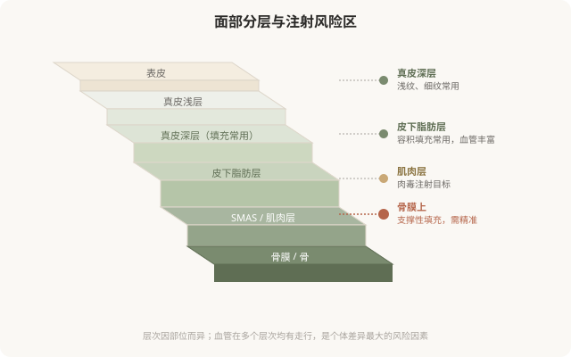
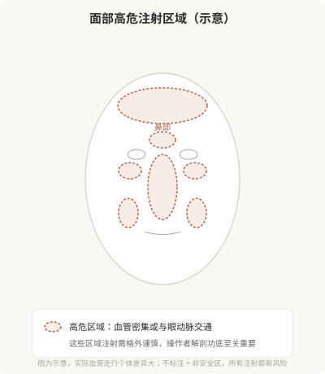

先说结论：面部注射的安全，根本上建立在解剖学上。皮肤分多少层、每一层里有什么、血管和神经怎么走、脂肪垫如何分布，这些决定了哪一层可以注射、哪一层绝对不能碰、不同部位的风险等级为什么差很多。理解面部解剖，不是要让你自己当医生，而是让你理解为什么注射对操作者要求极高，以及“血管栓塞”这种严重并发症从何而来。
面部从外到内的层次
面部从皮肤表面向深部，大致可以分成以下几个层次。不同注射材料作用在不同深度：

血管，风险的核心
面部血管密集，而且有些血管与眼动脉、颅内血管有交通。这就是血管栓塞这一最严重并发症的解剖基础，如果填充材料被误注入血管，可能顺着血流到达眼部或脑部，造成皮肤坏死、失明甚至更严重后果。
几个关键认识：
- 血管走行有大致规律，但个体差异大：鼻部、眉间、额头、泪沟、鼻唇沟是公认的高危区域，但每个人的血管位置都有差异。
- 层次决定是否安全：有些层次相对少血管，有些层次血管密集。操作者的解剖功底，就是知道每个部位在哪个层次注射相对安全。
- 回抽不能完全排除栓塞：注射前回抽看是否有血，是常规安全操作，但不是绝对保险，针头可能移动、血管可能被压扁。
- 少量、慢推、深部骨面支撑是降低栓塞风险的重要原则，尤其在高危区域。
下图标注了面部公认的高危注射区域：

脂肪垫，为什么“补容积”是门学问
面部不是均匀的一团，而是由多个独立的脂肪垫（如颧脂肪垫、鼻唇沟脂肪垫、眶周脂肪等）分隔构成。随年龄增长，这些脂肪垫会萎缩、下移，造成面部凹陷和下垂感。
“补容积”不是哪里凹就往哪里填，而是要理解哪些脂肪垫萎缩了、填在哪个层次能起到支撑作用、填多少不会让脸变宽变假。这就是为什么同样的材料，有经验的医生填出来“自然”，没经验的填出来“假面”，差别在对解剖的理解。
神经，影响表情的另一个维度
面神经分支支配表情肌。虽然注射材料不像手术那样直接切断神经，但层次不当、剂量过大、位置不对，都可能影响表情，填充物压迫神经、肉毒扩散到非目标肌肉，都会造成表情不自然。理解神经走行，是肉毒“打得自然不僵硬”的关键，也是填充避免影响表情的基础。
这一切对你意味着什么
你不需要记住血管和神经的名字。但理解“面部是高度复杂的分层结构”，会带来几个实际的判断：
- 注射对操作者的解剖功底要求极高，这决定了你为什么要选有资质的医生，而不是“便宜的老师”。
- 风险因部位差异巨大，鼻部、眉间、额头是高危区，更需要谨慎和经验。
- “自然”是建立在解剖理解上的，乱填一气只会“假”，理解结构才能“自然”。
- 出现血管栓塞征象要立刻处理，下一章会专门讲风险识别。
解剖，是注射安全的底层逻辑。把它当成“医生才需要懂的事”而忽略，等于放弃了作为知情消费者的判断力。
本文用于健康教育，不能替代面诊和个体化评估；面部注射须由熟悉解剖的具备资质医师在正规医疗机构开展。